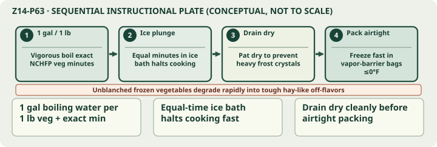

Z14-P63 · Food production and preservation · New manuscript
Blanch vegetables to exact tested times and chill rapidly before freezing
Inactivate quality-destroying plant enzymes cleanly so frozen garden vegetables retain flavor, color, and nutrients for months.
When it applies · Home freezing of green beans, broccoli, sweet corn, peas, carrots, spinach, and most garden vegetables.
Equipment · Large boiling-water kettle with wire basket (1 gallon water per 1 lb veg), exact NCHFP blanching-time chart, timer, and large ice-water bath.

Actions
- Wash and trim fresh young vegetables cleanly, then blanch most vegetables in vigorously boiling water (or steam per exact NCHFP table) for the exact crop-specific minutes—blanching stops natural enzymes that otherwise turn unblanched frozen vegetables woody, gray, and hay-flavored within weeks.[P12]
- Immediately transfer blanched vegetables into an abundant ICE-WATER BATH for the EXACT same number of minutes they were blanched so cooking stops instantly instead of turning vegetables mushy.[P12]
- Drain thoroughly on clean towels before packaging (excess surface water forms heavy frost crystals and freezer burn), noting that small quantities of raw peppers, onions, or herbs may be frozen unblanched per NCHFP if used cooked.[P12]
Failure recognition · Freezing raw unblanched garden green beans and sweet corn straight in thin sandwich bags, resulting in tough off-flavored freezer-burned produce by December.[P12]
Verify · Confirm exact NCHFP crop blanch time followed, equal-duration ice-water chill completed, and produce drained dry before bagging.[P12]
Stop or change course · Water failing to return to a boil within 1 minute after dropping vegetables indicates the batch is too large for the pot—split into smaller 1-pound batches.[P12]
Evidence and editorial notes
- P12 · NCHFP · Freezing Foods Safely (current web edition)
- Section: Freezing Foods > Blanching, Packaging, 0°F Storage, and Thawing · Conditions: Household freezers maintaining 0°F (-18°C) or lower
Support: Blanch most vegetables per tested times to inactivate quality-degrading enzymes, chill promptly, package in moisture-vapor-resistant freezer wrap/containers leaving liquid expansion headspace, freeze at 0°F or below, and thaw safely in the refrigerator (never on the counter).
Limitations: Freezing halts microbial growth but does not kill all pathogens; thawed foods require prompt safe cooking/handling. · Conflicting evidence: None; connects freezing quality control with Z15 outage loss decisions.
Editorial note: Core freezing and safe thawing evidence in Z14. · Specialist reviewer: Food safety and Extension preservation
Primary source · checked 2026-11-24
Source lineage · NCHFP Freezing Foods Safely; new manuscript · Classification · New manuscript.